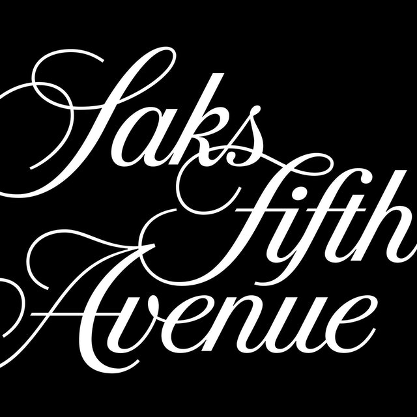

Michael Bierut is one of the leading and most innovating artists of modern design. A graphic designer, design critic and educator, he has spent the last four decades striving to represent and change people’s everyday lives, by creating engaging work that people want to read and look at. His work remains some of the most iconic and recognizable today. Known well for his branding for Saks Fifth Avenue, and his logos for Mastercard, Bierut is also a partner in the world’s largest design firm, Pentagram. “I melt in the face of clever,” he says.
Early Life
Born in Cleveland, Ohio in 1957, Bierut developed his first drawing skills as he attended morning classes at the Cleveland Museum of Art. He attended Normandy High School, where he came across one of his first design projects, in which the task was to create a poster for his school play, Wait Until Dark. “It was so much better than the still life of a dish of fruit I had done that was sitting in a display case being ignored,” he said. “This had purpose.” He discovered graphic design through books he was able to find from the local library, most noticeably books by Milton Glaser and Armin Hoffman, which had a great influence on his style from very early on in his life as a designer and continues to do so to this day.
University of Cincinnati
Bierut studied Graphic Design at the University of Cincinnati, in Ohio for five years. The Yale-Swiss Education style was popular in the school at the time, which contrasted against the graphic design books and artists he had studied growing up. This helped to widen Bierut’s overall style-scope and influences and allowed him to study different areas and ideas. While at the University, Bierut often did work for clients and friends completely free of charge, running entirely on his own work ethic, determination and passion. For him, graphic design was a way to combine both his love for illustration and commercial art. He found it most important to be actually interested in the subject you are designing for. Because of this, Bierut later went on to begin a student-run newspaper as a side project to his work. It was no secret that Bierut was in love with his work, evidenced in his persistence and talent.
Vignelli Associates
For the next ten years, Bierut went on to live in New York, where he worked for Massimo and Lella Vignelli at their firm, Vignelli Associates. Here, he began his very first job, and was responsible for creating mechanical boards entirely by hand, as at the time the studio did not have computers. Bierut was always very dedicated to his work, and spent two shifts each day on the job – one at normal hours and one late at night. His work ethic was noticed by Massimo Vignelli himself, who praised and admired his determination and resilience. Bierut was eventually promoted to Vice President of the company by Vignelli.
“Massimo taught me to focus on the big ideas, and I thought that big ideas were what connected with the greatest number of people.”
Bierut became very influenced by Massimo’s unique style, and shared his belief that there were only five good fonts that existed, and so only five fonts were used for the company’s projects. Bierut believed that design was important to making everyday life and ordinary people, such as his own mother, understand him. Thus, as he agreed with a lot of ideas Massimo had, he also had his own beliefs in design, and felt that design was more about communicating to an audience rather than simply just the aspects of colour or a typeface. He believed in unique style, and how effective it can be to be different, instead of maintaining the same style and format each time.
Pentagram
In 1990, Bierut became a partner with the leading design firm, Pentagram, where he excelled at branding and identity design, and continues to do so to this day.
Saks Fifth Avenue
In 2006, Bierut was tasked with designing a new logo for one of America’s most famed style companies, Saks Fifth Avenue.
Bierut opened doors for the way typography could be used, by experimenting with different typefaces in a number of ways to create unique and memorable designs. He appreciates the beauty of fonts and typefaces, using them to create designs that people want to look at. “Simplicity, wit and good typography,” are key to creating an iconic design, Bierut states.